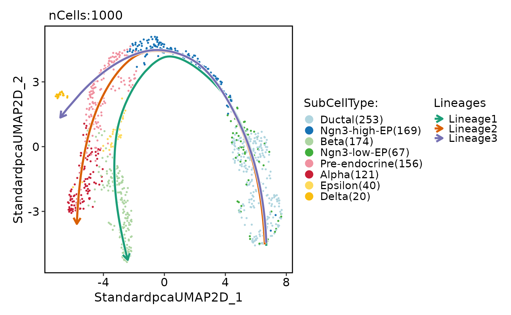
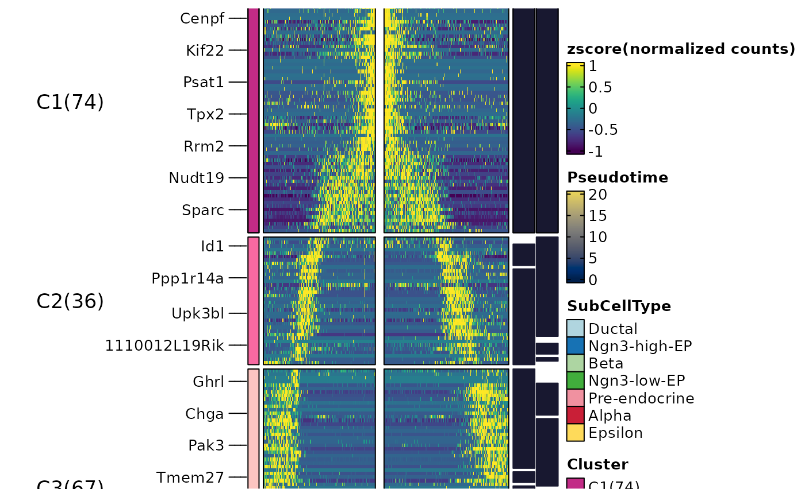
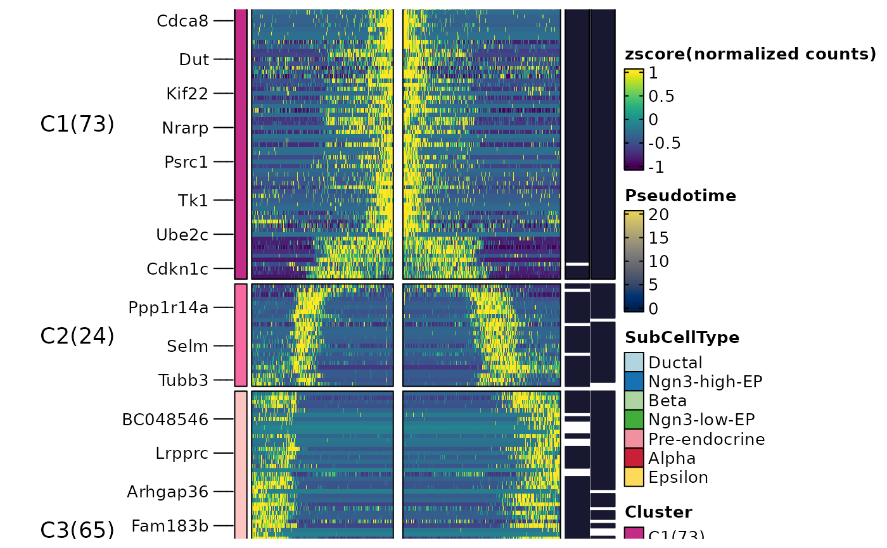
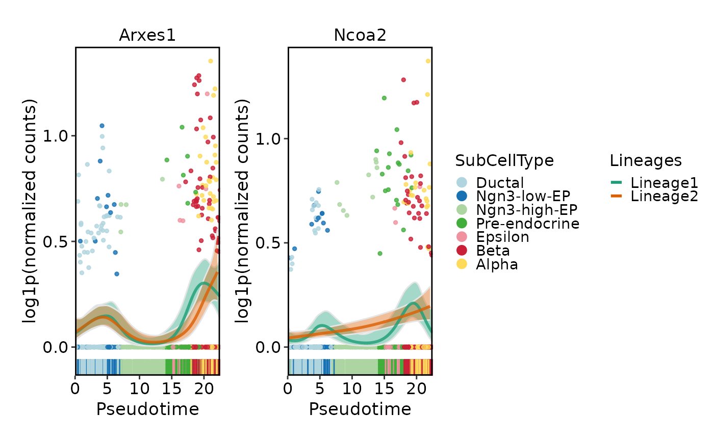

Calculates dynamic features for lineages
Usage
RunDynamicFeatures(
srt,
lineages,
features = NULL,
suffix = lineages,
n_candidates = 1000,
minfreq = 5,
family = NULL,
layer = "counts",
assay = NULL,
libsize = NULL,
fit_method = c("gam", "pretsa"),
knot = 0,
max_knot_allowed = 10,
pretsa_backend = c("cpp", "r"),
padjust_method = "fdr",
cores = 1,
verbose = TRUE,
seed = 11
)Arguments
- srt
A
Seuratobject.- lineages
Lineage names for which dynamic features should be calculated.
- features
Features to use. If
NULL, n_candidates must be provided.- suffix
Suffix to append to the output layer names for each lineage. Default is the lineage names.
- n_candidates
A number of candidate features to select when features is
NULL.- minfreq
Minimum frequency threshold for candidate features. Features with a frequency less than minfreq will be excluded.
- family
A character or character vector specifying the family of distributions to use for the GAM. If family is set to NULL, the appropriate family will be automatically determined based on the data. If length(family) is 1, the same family will be used for all features. Otherwise, family must have the same length as features.
- layer
Assay layer to use.
- assay
Assay to use.
NULLuses the default assay.- libsize
A numeric or numeric vector specifying the library size correction factors for each cell. If NULL, the library size correction factors will be calculated based on the expression matrix. If length(libsize) is 1, the same value will be used for all cells. Otherwise, libsize must have the same length as the number of cells in srt.
- fit_method
The method used for fitting features. Either
"gam"(generalized additive models) or"pretsa"(Pattern recognition in Temporal and Spatial Analyses).- knot
For
fit_method = "pretsa": B-spline knots.0or"auto".- max_knot_allowed
For
fit_method = "pretsa"whenknot = "auto": max knots.- pretsa_backend
PreTSA fitting backend.
"cpp"batches model selection and fitting;"r"retains the reference implementation.- padjust_method
The method used for p-value adjustment.
- cores
The number of worker processes to use for parallelization. Default is
1.- verbose
Whether to print the message. Default is
TRUE.- seed
Optional integer seed. When supplied, every input receives a deterministic independent L'Ecuyer-CMRG random-number stream, making results reproducible across worker counts and scheduling order. The caller's random number state is restored when the call finishes.
Value
Returns the modified Seurat object with the calculated dynamic features stored in the tools slot.
References
Zhuang, H., Ji, Z. PreTSA: computationally efficient modeling of temporal and spatial gene expression patterns. Genome Biol (2026). https://doi.org/10.1186/s13059-026-03994-3
Examples
data(pancreas_sub)
pancreas_sub <- RunStandardWorkflow(pancreas_sub)
#> ℹ [2026-10-04 22:21:35] Start standard processing workflow...
#> ℹ [2026-10-04 22:21:35] Checking a list of <Seurat>...
#> ! [2026-10-04 22:21:35] Data 1/1 of the `srt_list` is "unknown"
#> Warning: Data 1/1 of the `srt_list` is "unknown"
#> ℹ [2026-10-04 22:21:35] Perform `NormalizeData()` with `normalization.method = 'LogNormalize'` on 1/1 of `srt_list`...
#> ℹ [2026-10-04 22:21:35] Perform `FindVariableFeatures()` on 1/1 of `srt_list`...
#> ℹ [2026-10-04 22:21:35] Use the separate HVF from `srt_list`
#> ℹ [2026-10-04 22:21:36] Number of available HVF: 2000
#> ℹ [2026-10-04 22:21:36] Finished check
#> ℹ [2026-10-04 22:21:36] Perform `ScaleData()`
#> ℹ [2026-10-04 22:21:36] Perform pca linear dimension reduction
#> ℹ [2026-10-04 22:21:36] Use stored estimated dimensions 1:23 for Standardpca
#> ℹ [2026-10-04 22:21:37] Perform `Seurat::FindClusters()` with `cluster_algorithm = 'louvain'` and `cluster_resolution = 0.6`
#> ℹ [2026-10-04 22:21:37] Reorder clusters...
#> ℹ [2026-10-04 22:21:37] Skip `log1p()` because `layer = data` is not "counts"
#> ℹ [2026-10-04 22:21:37] Perform umap nonlinear dimension reduction
#> ✔ [2026-10-04 22:21:46] Standard processing workflow completed
pancreas_sub <- RunSlingshot(
pancreas_sub,
group.by = "SubCellType",
reduction = "UMAP"
)
#> Warning: Removed 8 rows containing missing values or values outside the scale range
#> (`geom_path()`).
#> Warning: Removed 8 rows containing missing values or values outside the scale range
#> (`geom_path()`).

pancreas_sub <- RunDynamicFeatures(
pancreas_sub,
lineages = c("Lineage1", "Lineage2"),
n_candidates = 200,
fit_method = "gam"
)
#> ℹ [2026-10-04 22:21:47] Start find dynamic features
#> ℹ [2026-10-04 22:21:48] Data type is raw counts
#> ℹ [2026-10-04 22:21:49] Number of candidate features (union): 225
#> ℹ [2026-10-04 22:21:49] Data type is raw counts
#> ℹ [2026-10-04 22:21:49] Calculating dynamic features for "Lineage1"...
#> ℹ [2026-10-04 22:21:49] Using 1 core
#> ⠙ [2026-10-04 22:21:49] Running for Ghrl [1/225] 0% | ETA: 13s
#> ⠹ [2026-10-04 22:21:49] Running for Cpa1 [53/225] ■■ 24% | ETA: 5s
#> ⠸ [2026-10-04 22:21:49] Running for Cenpe [139/225] ■■■■■■ 62% | ETA: 3s
#> ✔ [2026-10-04 22:21:49] Completed 225 tasks in 7.5s
#>
#> ℹ [2026-10-04 22:21:49] Building results
#> ℹ [2026-10-04 22:21:57] Calculating dynamic features for "Lineage2"...
#> ℹ [2026-10-04 22:21:57] Using 1 core
#> ⠙ [2026-10-04 22:21:57] Running for Ghrl [1/225] 0% | ETA: 9s
#> ⠹ [2026-10-04 22:21:57] Running for Tuba1c [85/225] ■■■ 38% | ETA: 5s
#> ⠸ [2026-10-04 22:21:57] Running for Tk1 [171/225] ■■■■■■■ 76% | ETA: 2s
#> ✔ [2026-10-04 22:21:57] Completed 225 tasks in 8s
#>
#> ℹ [2026-10-04 22:21:57] Building results
#> ✔ [2026-10-04 22:22:05] Find dynamic features done
names(
pancreas_sub@tools$DynamicFeatures_Lineage1
)
#> [1] "DynamicFeatures" "raw_matrix" "fitted_matrix" "upr_matrix"
#> [5] "lwr_matrix" "libsize" "lineages" "family"
head(
pancreas_sub@tools$DynamicFeatures_Lineage1$DynamicFeatures
)
#> features exp_ncells r.sq dev.expl peaktime valleytime pvalue padjust
#> Ghrl Ghrl 154 0.3620766 0.7154903 16.54343 8.79532606 0 0
#> Ins1 Ins1 195 0.6691413 0.8367574 22.39656 2.92566458 0 0
#> Ins2 Ins2 128 0.8020151 0.9321648 22.39656 0.03555716 0 0
#> Iapp Iapp 311 0.6952029 0.8607989 22.39656 0.03555716 0 0
#> Nnat Nnat 242 0.7649846 0.8444729 22.39656 0.03555716 0 0
#> Pyy Pyy 423 0.4129535 0.7826950 19.06471 9.30134850 0 0
ht <- DynamicHeatmap(
pancreas_sub,
lineages = c("Lineage1", "Lineage2"),
cell_annotation = "SubCellType",
n_split = 3,
reverse_ht = "Lineage1"
)
#> ℹ [2026-10-04 22:22:05] [1] 177 features from Lineage1,Lineage2 passed the threshold (exp_ncells>[1] 20 & r.sq>[1] 0.2 & dev.expl>[1] 0.2 & padjust<[1] 0.05):
#> ℹ Ghrl,Ins1,Ins2,Iapp,Nnat,Pyy,Lrpprc,Chgb,Cck,Slc38a5...
#> ℹ [2026-10-04 22:22:05]
#> ℹ The size of the heatmap is fixed because certain elements are not scalable.
#> ℹ The width and height of the heatmap are determined by the size of the current viewport.
#> ℹ If you want to have more control over the size, you can manually set the parameters 'width' and 'height'.
ht$plot

DynamicPlot(
pancreas_sub,
lineages = c("Lineage1", "Lineage2"),
features = c("Arxes1", "Ncoa2"),
group.by = "SubCellType",
compare_lineages = TRUE,
compare_features = FALSE
)
#> ℹ [2026-10-04 22:22:08] Start find dynamic features
#> ℹ [2026-10-04 22:22:08] Data type is raw counts
#> ℹ [2026-10-04 22:22:08] Number of candidate features (union): 2
#> ℹ [2026-10-04 22:22:09] Data type is raw counts
#> ℹ [2026-10-04 22:22:09] Calculating dynamic features for "Lineage1"...
#> ℹ [2026-10-04 22:22:09] Using 1 core
#> ⠙ [2026-10-04 22:22:09] Running for Arxes1 [1/2] ■■■■■ 50% | ETA: 0s
#> ✔ [2026-10-04 22:22:09] Completed 2 tasks in 142ms
#>
#> ℹ [2026-10-04 22:22:09] Building results
#> ✔ [2026-10-04 22:22:09] Find dynamic features done
#> ℹ [2026-10-04 22:22:09] Start find dynamic features
#> ℹ [2026-10-04 22:22:09] Data type is raw counts
#> ℹ [2026-10-04 22:22:10] Number of candidate features (union): 2
#> ℹ [2026-10-04 22:22:10] Data type is raw counts
#> ℹ [2026-10-04 22:22:10] Calculating dynamic features for "Lineage2"...
#> ℹ [2026-10-04 22:22:10] Using 1 core
#> ℹ [2026-10-04 22:22:10] Building results
#> ✔ [2026-10-04 22:22:10] Find dynamic features done
 pancreas_sub <- RunDynamicFeatures(
pancreas_sub,
lineages = c("Lineage1", "Lineage2"),
n_candidates = 200,
fit_method = "pretsa"
)
#> ℹ [2026-10-04 22:22:11] Start find dynamic features
#> ℹ [2026-10-04 22:22:12] Data type is raw counts
#> ℹ [2026-10-04 22:22:13] Number of candidate features (union): 225
#> ℹ [2026-10-04 22:22:13] Data type is raw counts
#> ℹ [2026-10-04 22:22:13] Calculating dynamic features for "Lineage1"...
#> ℹ [2026-10-04 22:22:13] Calculating dynamic features for "Lineage2"...
#> ✔ [2026-10-04 22:22:13] Find dynamic features done
head(
pancreas_sub@tools$DynamicFeatures_Lineage1$DynamicFeatures
)
#> features exp_ncells r.sq dev.expl peaktime valleytime pvalue
#> Ghrl Ghrl 154 0.1709209 0.1709209 16.12512 22.39656184 2.901952e-27
#> Ins1 Ins1 195 0.6954607 0.6954607 22.39656 12.82208201 9.292540e-174
#> Ins2 Ins2 128 0.8515028 0.8515028 22.39656 12.66964632 5.460459e-279
#> Iapp Iapp 311 0.8722933 0.8722933 22.39656 0.03555716 4.310906e-301
#> Nnat Nnat 242 0.8049211 0.8049211 22.39656 0.03555716 5.201249e-239
#> Pyy Pyy 423 0.6805885 0.6805885 22.39656 5.21771532 8.955939e-167
#> padjust
#> Ghrl 4.185508e-27
#> Ins1 8.363286e-173
#> Ins2 4.095345e-277
#> Iapp 4.849770e-299
#> Nnat 1.671830e-237
#> Pyy 6.716954e-166
ht <- DynamicHeatmap(
pancreas_sub,
lineages = c("Lineage1", "Lineage2"),
cell_annotation = "SubCellType",
n_split = 3,
reverse_ht = "Lineage1"
)
#> ℹ [2026-10-04 22:22:13] [1] 162 features from Lineage1,Lineage2 passed the threshold (exp_ncells>[1] 20 & r.sq>[1] 0.2 & dev.expl>[1] 0.2 & padjust<[1] 0.05):
#> ℹ Ins1,Ins2,Iapp,Nnat,Pyy,Lrpprc,Chgb,Cck,Slc38a5,Npy...
#> ℹ [2026-10-04 22:22:14]
#> ℹ The size of the heatmap is fixed because certain elements are not scalable.
#> ℹ The width and height of the heatmap are determined by the size of the current viewport.
#> ℹ If you want to have more control over the size, you can manually set the parameters 'width' and 'height'.
ht$plot
pancreas_sub <- RunDynamicFeatures(
pancreas_sub,
lineages = c("Lineage1", "Lineage2"),
n_candidates = 200,
fit_method = "pretsa"
)
#> ℹ [2026-10-04 22:22:11] Start find dynamic features
#> ℹ [2026-10-04 22:22:12] Data type is raw counts
#> ℹ [2026-10-04 22:22:13] Number of candidate features (union): 225
#> ℹ [2026-10-04 22:22:13] Data type is raw counts
#> ℹ [2026-10-04 22:22:13] Calculating dynamic features for "Lineage1"...
#> ℹ [2026-10-04 22:22:13] Calculating dynamic features for "Lineage2"...
#> ✔ [2026-10-04 22:22:13] Find dynamic features done
head(
pancreas_sub@tools$DynamicFeatures_Lineage1$DynamicFeatures
)
#> features exp_ncells r.sq dev.expl peaktime valleytime pvalue
#> Ghrl Ghrl 154 0.1709209 0.1709209 16.12512 22.39656184 2.901952e-27
#> Ins1 Ins1 195 0.6954607 0.6954607 22.39656 12.82208201 9.292540e-174
#> Ins2 Ins2 128 0.8515028 0.8515028 22.39656 12.66964632 5.460459e-279
#> Iapp Iapp 311 0.8722933 0.8722933 22.39656 0.03555716 4.310906e-301
#> Nnat Nnat 242 0.8049211 0.8049211 22.39656 0.03555716 5.201249e-239
#> Pyy Pyy 423 0.6805885 0.6805885 22.39656 5.21771532 8.955939e-167
#> padjust
#> Ghrl 4.185508e-27
#> Ins1 8.363286e-173
#> Ins2 4.095345e-277
#> Iapp 4.849770e-299
#> Nnat 1.671830e-237
#> Pyy 6.716954e-166
ht <- DynamicHeatmap(
pancreas_sub,
lineages = c("Lineage1", "Lineage2"),
cell_annotation = "SubCellType",
n_split = 3,
reverse_ht = "Lineage1"
)
#> ℹ [2026-10-04 22:22:13] [1] 162 features from Lineage1,Lineage2 passed the threshold (exp_ncells>[1] 20 & r.sq>[1] 0.2 & dev.expl>[1] 0.2 & padjust<[1] 0.05):
#> ℹ Ins1,Ins2,Iapp,Nnat,Pyy,Lrpprc,Chgb,Cck,Slc38a5,Npy...
#> ℹ [2026-10-04 22:22:14]
#> ℹ The size of the heatmap is fixed because certain elements are not scalable.
#> ℹ The width and height of the heatmap are determined by the size of the current viewport.
#> ℹ If you want to have more control over the size, you can manually set the parameters 'width' and 'height'.
ht$plot

DynamicPlot(
pancreas_sub,
lineages = c("Lineage1", "Lineage2"),
features = c("Arxes1", "Ncoa2"),
group.by = "SubCellType",
compare_lineages = TRUE,
compare_features = FALSE
)
#> ℹ [2026-10-04 22:22:16] Start find dynamic features
#> ℹ [2026-10-04 22:22:17] Data type is raw counts
#> ℹ [2026-10-04 22:22:17] Number of candidate features (union): 2
#> ℹ [2026-10-04 22:22:17] Data type is raw counts
#> ℹ [2026-10-04 22:22:17] Calculating dynamic features for "Lineage1"...
#> ℹ [2026-10-04 22:22:17] Using 1 core
#> ⠙ [2026-10-04 22:22:17] Running for Arxes1 [1/2] ■■■■■ 50% | ETA: 0s
#> ✔ [2026-10-04 22:22:17] Completed 2 tasks in 140ms
#>
#> ℹ [2026-10-04 22:22:17] Building results
#> ✔ [2026-10-04 22:22:18] Find dynamic features done
#> ℹ [2026-10-04 22:22:18] Start find dynamic features
#> ℹ [2026-10-04 22:22:18] Data type is raw counts
#> ℹ [2026-10-04 22:22:18] Number of candidate features (union): 2
#> ℹ [2026-10-04 22:22:19] Data type is raw counts
#> ℹ [2026-10-04 22:22:19] Calculating dynamic features for "Lineage2"...
#> ℹ [2026-10-04 22:22:19] Using 1 core
#> ⠙ [2026-10-04 22:22:19] Running for Arxes1 [1/2] ■■■■■ 50% | ETA: 0s
#> ✔ [2026-10-04 22:22:19] Completed 2 tasks in 146ms
#>
#> ℹ [2026-10-04 22:22:19] Building results
#> ✔ [2026-10-04 22:22:19] Find dynamic features done
